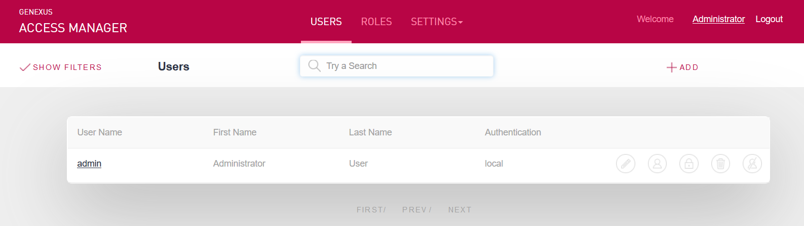

GAM Backend is a web application which allows the GAM administrator to manage the GAM Repository users, GAM Roles, GAM Security Policies, etc. The GeneXus objects of this application are part of the GAM Examples distributed by GeneXus when Enable Integrated Security property is set to TRUE (the objects are located in GAM examples folder). These objects can be changed as desired by the GeneXus developer if some requirement are not met because the GAM API is available for that purpose. The recommendation is to make a save as of the objects prior to modifying them, because the examples can change in each upgrade, so the user changes could be lost. The main object of GAM Backend application is GAMHome object. Take into account that the first screen that may be displayed when executing GAMHome object is the Web Panel GAMExampleLogin in order to enter your credentials as, by default, GAMHome is a private object.  Figure 1By default only administrator users are allowed to execute GAM Backend, see Restricted access to GAM Backend for details. The actions that can be performed using GAM backend application basically consist on the administration of:
See AlsoRestricted access to GAM Backend
|